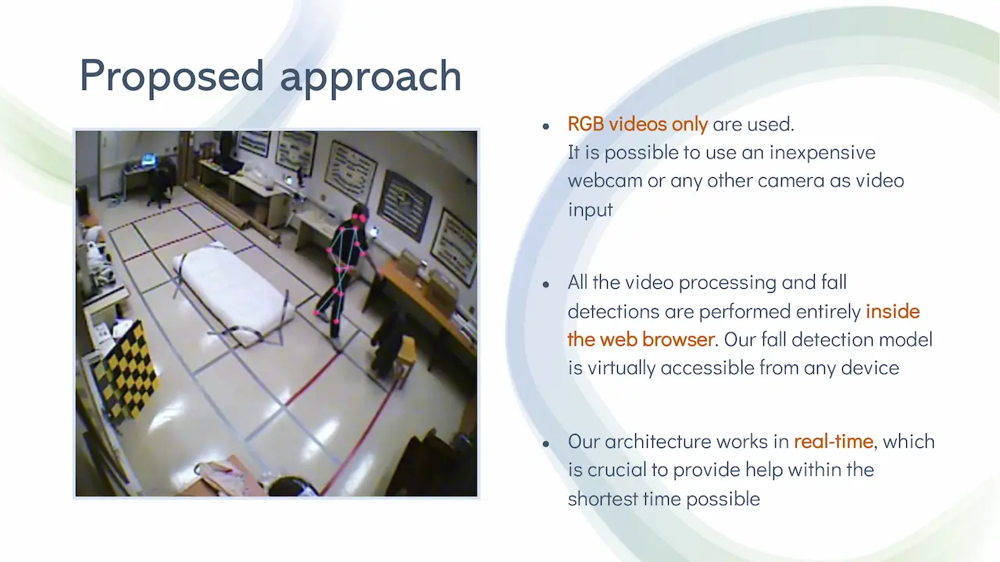
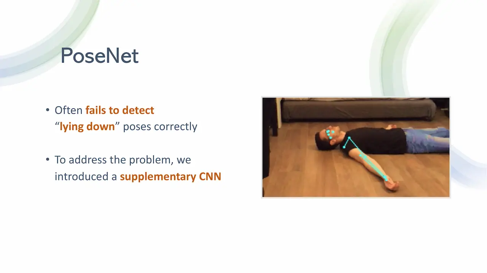
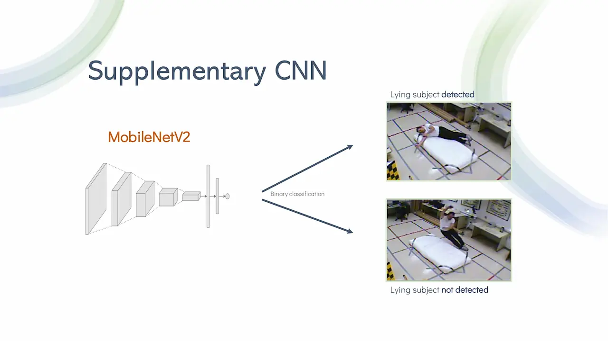
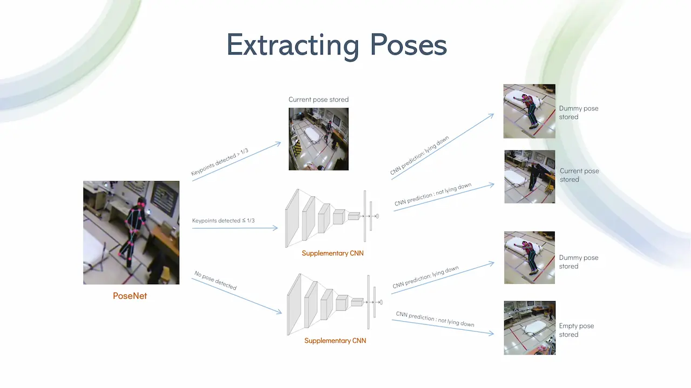
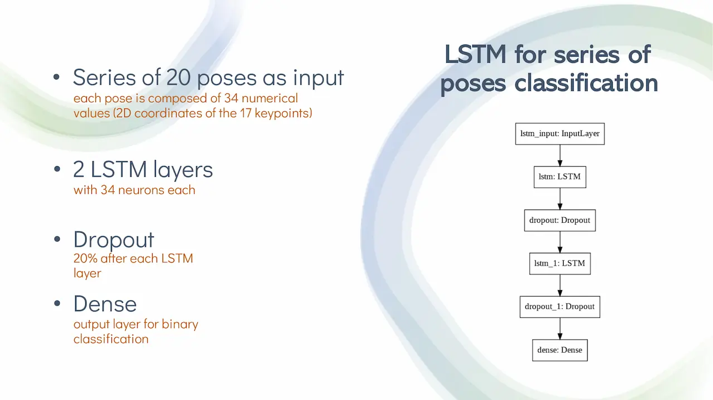
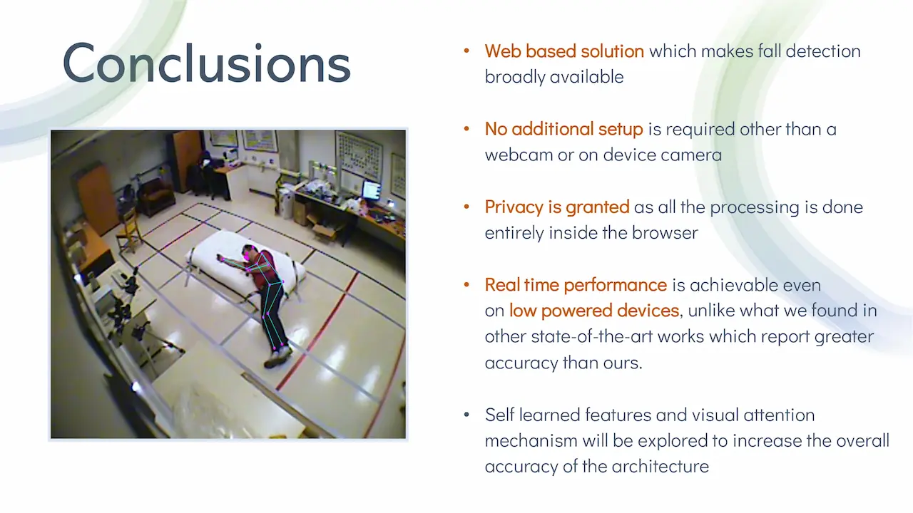

March 2020 - January 2021
Real-time remote fall detection using Deep Neural Networks
This is my first research project using Machine Learning. I developed a fall detection system based on Deep Neural Networks which runs inside the browser in real time. This project, which originally started as my bachelor's thesis, has been accepted for pubblication by CARE2020 workshop held during ICPR2020 conference. Below you will find the video presentation made for the conference and the written explanation of how the system works, or you can directly read or download the published paper using the buttons below.
Video presentation
How does it work
Falls are one the most prominent cause of accidental injury deaths worldwide. In 2018, as reported by the World Health Organization, only car accidents caused more deaths than falls did. The most affected ones by this type of accident, as can be expected, are the elderly and in particular, adults older than 65 years old suffer the greatest number of fatal falls. Being falls such a common and at the same time dangerous kind of accident, the problem of fall detection received much interest from researchers during the last years. Recently, deep learning proved to an optimal solution to tackle such problem. Many pieces of research feature deep neural network architectures and many different types of sensors to address the problem, including cameras, accelerometers, Wi-FI and a mix of the previous. Although there is no one type of sensor generally more suitable than others to perceive a fall, we chose to use only vision based sensors.
This choice came from our will to develop a fall detection system which to be used would not require to purchase additional hardware, or software. With our architecture running inside the web browser, one could use even a smartphone or a device with an integrated camera as an advanced fall detection tool. In particular, we used videos from RGB cameras only. We chose not to use depth cameras as they aren't as widespread as the RGB ones. As long as the camera can be connected to a computer and work like a webcam, our method requires to have only a web browser installed. We are able to process the videos inside the browser as our neural networks are converted to TensorFlow.js after training. With TensorFlow.js the performance is not as good as with Tensorflow, but the results we obtained clearly show that it is already possible to run Deep Neurale Networks in real time even inside the web browser and even on low powered devices. Let's take a look inside our architecture.

We employ a pose estimation model named PoseNet to extract a pose from each video frame. If PoseNet's prediction is not accurate enough a supplementary Convolutional Neural Network comes into play, performing a furter prediction. Once extracted, the poses are fed to a LSTM network to perform binay classification. Thereby we can distinguish the series of poses which contain a fall by the ones which don't.
The frames we process come from two of the fall detection dataset which are used the most in literature. The first one is UR Fall detection dataset, wich contains the raw videos acquired with two rgb cameras as well as depth and accelerometer data. We only use rgb videos from the first camera wich is placed parallel to the ground. The second dataset is called Multicam and features 8 synchronized RGB cameras. This dataset contains much more frames the the first but the subject often takes a very small portion of the frame which sometimes causes problems with the pose estimation model we used. In order to use frames from both URFall and Multicam we merged the two dataset and split the resulting one in two parts. We used one of these parts for training the supplementary CNN and the other to perform poses extraction.
The fall detection model we used is able to detect the 2d coordinates of 17 human body keypoints and it's implemented in tensorflow.js to run smoothly in the web browser. Along with the 34 numerical values corresponding to the x and y coordinates of each keypoint, PoseNet returns a confidence score for each keypoint location and an overall confidence score which refers to the whole pose.

When testing PoseNet we discovered that it struggles with detecting the pose of subjects who are lying on the ground. The kind of situation is obviously predominant in our datasets, so to address this problem we implemented a supplementary Convolutional Neural Network to reinforce the pose extraction phase.
The CNN we chose is MobileNetV2. This CNN architecture was developed to be usable even on mobile devices while still achieving decent accuracy compared to heavier CNNs. For our work we employed a pre-trained and replaced the top layer with custom ones to fine tune the model on our dataset. In particular we trained the model to distinguish the frames which contain a person who is lying down and the ones which do not.
To understand why, you need to take a look at the poses extraction framework we developed. As i said we extract one pose from each video frame, and we do this processing completely inside the web browser.
Firstly, PoseNet tries to estimate the position of the 17 body keypoints. If no pose is found, or if the confidence score of more than two thirds of the keypoints is below 30%, we run the supplementary CNN. Based on the prediction of the CNN, we choose to save the original pose estimated by PoseNet, an empty pose or a dummy pose. This dummy pose is a pose we previously extracted from a video frame which contained a lying down subject, but of whom PoseNet was able to correctly identify all of the 17 keypoints. With this method we are able assing some information even to those frames from which we wouldn't be extract any if we just relied on PoseNet.
Once we have one pose for each video frame, we split such poses in time series of 20 and feed thos series to a LSTM network. The network is composed of 2 LSTM layers with 34 neurons each. We add dropout after each LSTM layer to prevent overfitting and we have a final Dense layer with sigmoid activation to perform binary classification.
Training the LSTM with an 80% training and 20% validation split we achieved 82% average accuracy. At the same time we outperform in terms of latency various state of the art fall detection methods which, unlike ours, run offline and which use much more powerful GPUs than we do.
To recap, our solution is completely web based, and so can be broadly distributed as a web app. The only requirements are a web browser and a RGB camera. Users privacy is granted as the processing is done completely offline and there is no need to send the data to a server and we can achieve real time performance even on low-powered machines with integrated GPUs. Finally, we are planning to further improve this architecture by learning the task end to end, without relying on poses and implementing some visual attention mechanism to improve the accuracy of our architecture.
